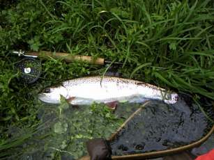
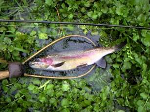

釣行日誌 ＮＺ編
ギャラリーはカモ撃ち猟師
2002/06/01 (SAT)
先週の好釣果に気をよくして再び峡谷の川にやってきた。ところが朝からどんより冬曇り、とてもドライフライには出そうにない。インジケーター＋ニンフで先週良かった区間を釣り上がるが、なんの気配も無い。アタリは無数にあるが、全部川底にかかっているだけである。
急流区間を過ぎて、ダラダラと平瀬が続く区間をそろそろと歩いてゆくと、とんでもない浅場から大きな鱒が走り出した。見ると、川底をほじくり返した跡がある。ああ、もう産卵床を作り始めているんだなぁと今さらながらに冬の訪れを思い知らされる。
さらに100mほど上流で、またしても浅場に50cm級のレインボーが２尾、産卵の体勢に入っているかのごとく寄り添って泳いでいる。じゃまをしないようにそろそろと反対側の岸を歩く。
キャンプ場から１キロほど歩くと、意外に険しい峡谷となり、大きく長く深い淵が連続するようになる。ところどころ廊下状になって川通しができないので、右岸側の散策道に上がって歩く。眼下の深淵には、どんな大物が潜むのだろうか？ 夏にルアーで釣り上がったら面白そうな川である。
川に降りられる所では、なんとかニンフで攻めてみるが、ちびっ子たちのアタリもなく、散策道が対岸に移るポイントまで来た。この先は川通しで歩いて行かなくてはならない。引き返すかどうか迷ったが、すこし先に良いポイントが見えていたので、そこだけ攻めてみようと足を進める。荒瀬の深みが続く、ニンフには絶好のポイントであったが、またしても反応が無く、そのまま引き返すことにする。
帰途、わずか1.5kmの道のりが、とんでもなくキツイ。いささか体重が増えすぎているようだ。同居人からは妊娠五ヶ月と言われているし、ダイエットが必要だと痛感する。
帰り道、散策道の上から、見事なブラウン、おそらく5ポンドはありそうなヤツが２尾産卵体勢に入っているところを目撃。しばし魅入る。いやぁ数は少ないだろうが大物がいるなぁ、と感激。
汗だくで車に戻ったあと、上流に回って橋詰めでランチを済ませ、そこからさらに上流をルアーで攻めてみるが、釣れる気配が無い。仕方がないので本流へ戻り、先月始めに攻めてみた吊り橋上の区間を攻める。本流にはそこそこ魚の気配があり、大物にはあたらなかったが、40cm級のレインボーが何尾か相手をしてくれたのでほっとした。
冬本番。どこの川も、産卵の時期に入ってしまったようである。やはりタウポに遠征するべきか？
2002/06/03 (MON)
今日はクイーンズバースディによりお休み。土曜日に調子の悪かった愛用のスピニングリール、ダイワのジュピターＺ1550のドラグを調整する。先回海でサビキ釣りをした後、洗いっぱなしで放置しておいたらドラグの効きが極端になってしまい、緩いか締めすぎかのどちらかで中間部分の微妙な調整がまったくできなかったのである。おかげで一昨日のレインボーたちにはかなり苦戦を強いられてしまった。
リールの部品一覧表を見つつ、慎重に分解し、ドラグワッシャー部分を見てみると、どうやら洗った際に水が侵入したらしく、各種ワッシャー類がずぶ濡れであり、摩擦の効く範囲が狭められていたようである。
取り出したそれぞれのワッシャーをハンカチで拭き、デロンギのオイルヒーターの上に伸せて乾かすと、濡れて薄黒かったワッシャーがきれいな褐色に戻った。あとは再び慎重に組み上げてビスでドラグカバーを止める。
オーバーホールの甲斐あって、元通り微妙なドラグ調整が広範囲で効くお気に入りのスピニングリールとして復帰した。
日本で買えば数千円のリールだが、私にとっては虎の子の一台であるので、丁寧に手入れをして長く使うつもり。
2002/06/09 (SUN)
スプリングクリークの上流に、ニンフフィッシングを楽しみに行った。ゲート脇のいつもの空き地に車を止め、支度をしていると、農道の奥の方からボトボトボトと四輪バギーの音がする。見ると、農家のおじさんがなにやら野菜のようなものをバギーの後部に積んでのんびり走ってくる。
が、しかし！ おじさんの手にはしっかりフライロッドが握られており、ロッドの先端には鮮やかなオレンジ色のインジケーターがたなびいている。
『うわ！ やられたァ........』
こんな上流では、これまでまったく他の釣り人に会ったことは無いのだが、さすがに地元の強者が居たか！ という感激と、この先の区間に先行されては困ったなぁという動揺を隠しつつ、努めて明るい笑顔を作りつつおじさんに挨拶する。
「ハロー！」
「グッダイ....」
おじさんの愛想の無さが、生来のものか、私の釣り姿に警戒したものかにわかには判断が付きかねたが怯まずに会話を続ける。
「釣れましたか？」
「小さいのをボチボチ。１尾いいのを釣った」
相変わらずのとっつきにくさでぼそぼそと答えたおじさんは、ふたたびボトボトボトとバギーをふかして村の方へ去っていった。おじさんがもう少しフレンドリーであれば、この上流で左右に分かれている流れの、どちらで釣ってきたのか聞きたかったのだが、その糸口をつかめないまま彼をじっと見送る。
『さて、どうしよう？』
この先の流れは、左の支流よりも右の支流の方が圧倒的に有望なのだが、おじさんが右に入ったとすれば、今から後を追って釣ったとしても、あまり期待は持てない。本当に小さな沢なのだ。さりとて冬の始まった今では他に有望な川もない。仕方なく、いくら地元のおじさんでも、入りにくいであろうトウモロコシ畑のはずれからなら、合流点まで数百メートルはあるので、その区間に今日の釣りを賭けることにする。
トウモロコシ畑を延々と横切り、畑のはずれから柵を乗り越えて川に降りる。水はやや増水。年中水温が安定しているので、それほど冷たいとは感じない。おそらく12℃ぐらいか。
いそいそとニンフ＋インジケーターの仕掛けをセットし、竿を入れてみる。最初のポイント、直線のザラ瀬ではあたりがなく、変だなあと思ってそろそろと探っていくと、瀬の中央に砂利がほじくり返された跡が見える。産卵床である。目を凝らしてみていると、産卵床の上流側に、型の良い、40cmほどのレインボーが婚姻色も鮮やかに定位している。しつこくニンフを流すが全く反応しない。どうやら営みの方に全神経が行ってしまっているらしく、餌を摂るモードでは無いようだ。じゃまをしないように岸沿いを歩いて上流へ回る。
ザラ瀬の始まりは、ザワザワと荒い流れ込みになっており、そこの深みの切れ目あたりにニンフを打ち込む。流れに乗ったオレンジ色のフワフワがスッと水中に消える。
『やったね！』
異常にはっきりした重い手応えがあるが、水に刺さったラインはまったく動かない。やったねのネは根掛かりの根であった。
『ちぇっ.......』
寒いから手を水に入れたくないのだが、虎の子のニンフを回収するために肘まで水に入れてゴソゴソと鉤を外す。流れの真ん中に流木が沈んでいたのであった。雨具を着ていたため、腕はそれほど濡れずに済んだ。気を取り直して流れ込みのアタマにニンフを振り込む。ちょっと流れが速すぎるかな？ と思った時に、フワフワがスッと止まり、合わせに続いて今度はブルブルとロッドが震える。水中でギラギラッと青銀色が煌めき、竿の曲がりが最高潮に達したところでいきなりスパーンと軽くなる。
『なんで？！』
ちょっと不本意な外れ方だったので、変だなと思ってニンフを見てみると、フックが伸びている。さっき根掛かりしたときに強く引っ張りすぎたらしい。むむむ。チェックしておくべきだった。反省。
左曲がりの小さな淵まで来た。いつも魚が居るのだが、速い流れが急角度で左に曲がるほんのちいさなポケットに居着いているので釣りにくいことこの上ない。数回探りを入れた後で反応が無いので、今日は居ないのかな？と思いつつソロソロと様子を伺いながら淵の中を覗いてみると、案の定40cm級と30cm級の２尾が寄り添うように底近くを泳いでいる。
ピタッとその場で凍り付いてじっと見ていると、どうやらこの２尾は食い気があるらしい。でもってそれから熱くなってニンフを50回ぐらい投げ込んでは見たものの、どうにも魚の鼻先にビーズヘッドが流れない。業を煮やして数歩スタンスを左に変えた途端に２尾は下流へ走り去っていった。
呆然と見送りつつ、このポイントでニンフに喰わせるのは無理ではないだろうかと弱気な結論を出して上流へ逃げる。
さて、本日のメインイベントとも言えるポイントにやってきた。一見して何の変哲もないザラ瀬なのだが、左岸寄りに微妙に流速が遅い帯が出来ており、先月ここでドライフライに出た大物を釣り損ねているのである。流れすぎてゆくロイヤルウルフを追い食いして二回も鼻先を出したレインボーがどうしても忘れられなくて今日ここを訪れたわけである。
そろそろと射程距離まで歩み寄り、ラインを繰り出して、少々不格好ではあるが、逆手で対岸の弛みの始まりにニンフを投げる。最初の二投は、流心に近すぎたようだ。三投目、流れ出しにニンフが入り、インジケーターが流れに乗って先回ドライで出たポイントを通り越したあたりでオレンジ色が水に引き込まれる。すかさずロッドを立てると、底にへばりつくような重い引きが下流へ走り出す。へばりつき方が大物らしい手応えである。浅い瀬の中をインジケーターのオレンジ色がぴくぴくと引きつりながら流れるように下ってゆく。
今度こそ
「やったね！」
である。魚に引かれて一歩一歩と流れを下るこの喜びよ。
この瀬は変化に乏しく、極めて速い流れが一様に広がっているので、魚を遊ばせて堪えるところが無い。鱒の思うまま、ぐいぐいと引かれて下の深みに入られてしまう。深みの上に被さった灌木にラインを絡めないよう、竿を寝かせながら堪えに堪えていると、鱒はまたも下流へ走り出す。
結局、さらに20mほど下った左曲がりの淵まで走られて、そこの弛みでようやくネットにすくったのは45cmの銀ピカのレインボーであった。左の顎にかかったニンフを外し、ネットから出してやると一目散に深みへと消えた。

『あーっ スカッとしたぁ！』
こないだ釣れなかった大物を、してやったりという具合に釣ることが出来たのでいつになく爽快な気分になった。
その後、岩が並んでいる深み、古い木橋の下の深みなどをチェックするが魚影はない。結局１尾釣っただけでとうとう合流点まで来てしまった。さっき出会った農家のおじさんが攻めてみた後かも知れなかったが、念のために流れが合わさった淀みを攻めてみる。下流側の弛みでは何の反応もない。上流側、Ｙ字になった中央部の、ごく浅いチャラ瀬といっていいぐらいの弛みを数回流す。すると、重めのニンフが底に掛かったのか、なんとなくインジケーターが沈んだ。
『ちっ.....』
と思ってロッドをあおった瞬間、浅い弛みにバシャバシャバシャッと水しぶきが上がり、暗い影が下流へ走る。
『おおっと！ あんな浅いところに居たかっ！』
などと驚いているこちらを尻目に、鱒は一散に荒い流れに突入する。さっきのと同じクラスのなかなか良い手応えである。右岸の突き当たりの大石脇がグルグルと巻き返す深みになっており、そこへ魚を導いてから体勢を立て直し、できればここでランディングまで遊ばせようと試みる。ここから下流は流れも一番速くなる場所だし、両岸の足場が悪くとても歩いて下れるとは思えないのだ。
深みで右往左往している鱒に抵抗しつつロッドを高く保持し、少しヤツの体力が落ちたかな？と思った途端、二回目の突進が始まり、大石の向こう側へ鱒が回り込んだ。
『やばいっ！ ティペットを切られる！』
慌ててラインを巻き取りながら下流へ歩み寄り、腕を遠くに差しのばしてティペットと岩の擦れを防ぐと、その隙に鱒がさらに下流へと逸走する。
『くそっ！』
大石によじ登り本流の一番速い流れに乗ってジージーとラインを引き出してゆく鱒に堪える。このまま下られたら、木橋の下をくぐられてしまう。あそこはとても足が立たない廊下になっている。付いて下るわけにはいかない。さりとてこの石の上からでは、これだけラインを出されている以上、とうていランディングは無理である。
一か八か、木橋の直前の右曲がりの淵でランディングするべく一番強い流れの真ん中に歩み込み、ロッドを立てながら鱒を追う。インジケーターの位置からすると、鱒が淵のあたりに行ったのが見えたので、大きく竿を左側に倒してためを作り、鱒をやや強引に淵の巻き返しに引きずり込む。さすがにここから下流に向かう力はもう残っていなかったが、なおも巻き返しの中で二転三転して抵抗する鱒の赤銅色が見える。
インジケーターがトップガイドに入るまでラインを巻き取り、竿尻をこじるようにこらえる。鱒を寄せ、荒ぶる鱒の頭をネットに入れる。
『おおー、やったー！』
非常に月並みな表現であるが、こうとしか言い様のない興奮に包まれながらずっしり重いネットを水辺の草むらに置く。

不意に
「大きいかーい？」
と呼ぶ声が聞こえたので、びっくりして上流を見ると、カモ撃ちに来たらしい若者が二人、大石の所で立ってこちらを見ている。どうやら一部始終を見ていたらしい。
「なかなかいい鱒だよォ」
と答えながら、ちょっとだけ鱒を持ち上げて見せてやった。ギャラリーの前で良いところを見せられるのは、人生の中でそうそう味わえない経験なので、デレデレににやけていたであろう顔を必死に冷静に繕いながら写真を撮る。黄色みを帯びた体色に、バラ色の頬が鮮やかな虹鱒。38cmだった。
重い流れに足を取られながら遡って行くと、合流点の所に若い猟師たちが待っており、
「よく釣り上げたな！」
と誉めてくれた。
「サンキューサンキュー！」
と、デレデレの笑顔で答えた。
合流点から上流は、おじさんが釣った後だったためか、さっぱり反応は無く、ずいぶん上流の、ほとんど魚止めに近い場所まで上がってから１尾見かけただけだった。
ま、しかし。いくら川の流れが速いからとはいえ、２尾釣っただけでちょっと筋肉痛を味わわせてくれた今日の鱒たちに感謝しつつ冬のスプリングクリークを後にした。
釣行日誌ＮＺ編 目次へ
サイトマップ
ホームへ
お問い合わせ